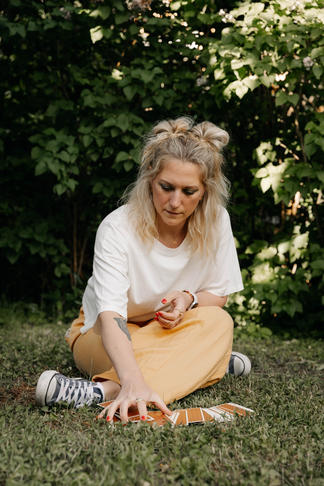

Coaching med tarot
60 min · 900 kr
Tarot som verktyg för att få syn på mönster, sätta ord på det som pågår och hitta riktning framåt.
För dig som längtar efter att förstå dig själv, bryta gamla mönster och hitta tillbaka till det som faktiskt är du.
Tarot som verktyg för reflektion, självkännedom och förändring – inte för att någon annan ska tala om för dig hur ditt liv kommer bli.
Läs mer →För dig som vill förstå var du befinner dig, vad som håller dig tillbaka och börja ta steg i den riktning du faktiskt vill.
Läs mer →Ett djupare 1:1-upplägg för dig som vill skapa varaktig förändring och hitta hem till dig själv.
Läs mer →Mitt nyhetsbrev med insikter, reflektioner, tarot och övningar – sådant som får ta lite mer plats.
Läs mer →Jag driver Mellickas och arbetar med coaching, tarot och personlig utveckling. Min passion är att hjälpa dig som står mitt i livet – kanske i en period av förändring, tvivel eller längtan – att förstå dig själv på djupet och hitta tillbaka till det som är sant för dig.
Jag tror inte på att fixa, förbättra eller optimera människor. Jag tror på att minnas, landa och lyssna. Här utforskar vi det som pågår, ser mönster och hittar nya vägar framåt – med både hjärta och klarhet.
Mer om migJag använder tarot som ett verktyg för att få syn på det som redan pågår: mönster, perspektiv, längtan och det som kan vara svårt att sätta ord på.
Du kommer inte till mig för att lämna över ansvaret för framtiden. Du kommer för att förstå mer av dig själv – och vad du vill göra härifrån.
Utforska coaching med tarotTjänster & priser
Olika vägar, samma grund: mer självkännedom, tydligare riktning och förändring som får ta plats i verkliga livet.
60 min · 900 kr
Tarot som verktyg för att få syn på mönster, sätta ord på det som pågår och hitta riktning framåt.
3 sessioner · 2 500 kr
För dig som vill arbeta vidare med det som kommer upp och hinna omsätta insikterna mellan våra träffar.
60 min · 900 kr
6 sessioner · 5 000 kr
Samtal med fokus på självkännedom, förändring och att komma närmare det liv som faktiskt känns som ditt.
Fördjupande 1:1-program
För dig som vill gå djupare och skapa utrymme för verklig förändring över tid. Kontakta mig för aktuellt upplägg och pris.
Fester & event
Något gästerna faktiskt kommer prata om efteråt.
Boka mig till företagsevent, födelsedagar, bröllop, möhippor och andra tillställningar. Jag erbjuder kortare individuella tarotläsningar för gästerna – personligt, lättsamt och anpassat efter sammanhanget.
Pris efter upplägg. Kontakta mig för offert.
Vill du boka mig till ett event?
Kontakta mig på info@mellickas.se för upplägg och offert.

Reflektioner, övningar, tarot och sådant jag själv funderar på – direkt till din inkorg varannan vecka.
För det är mellan raderna saker och ting sker.